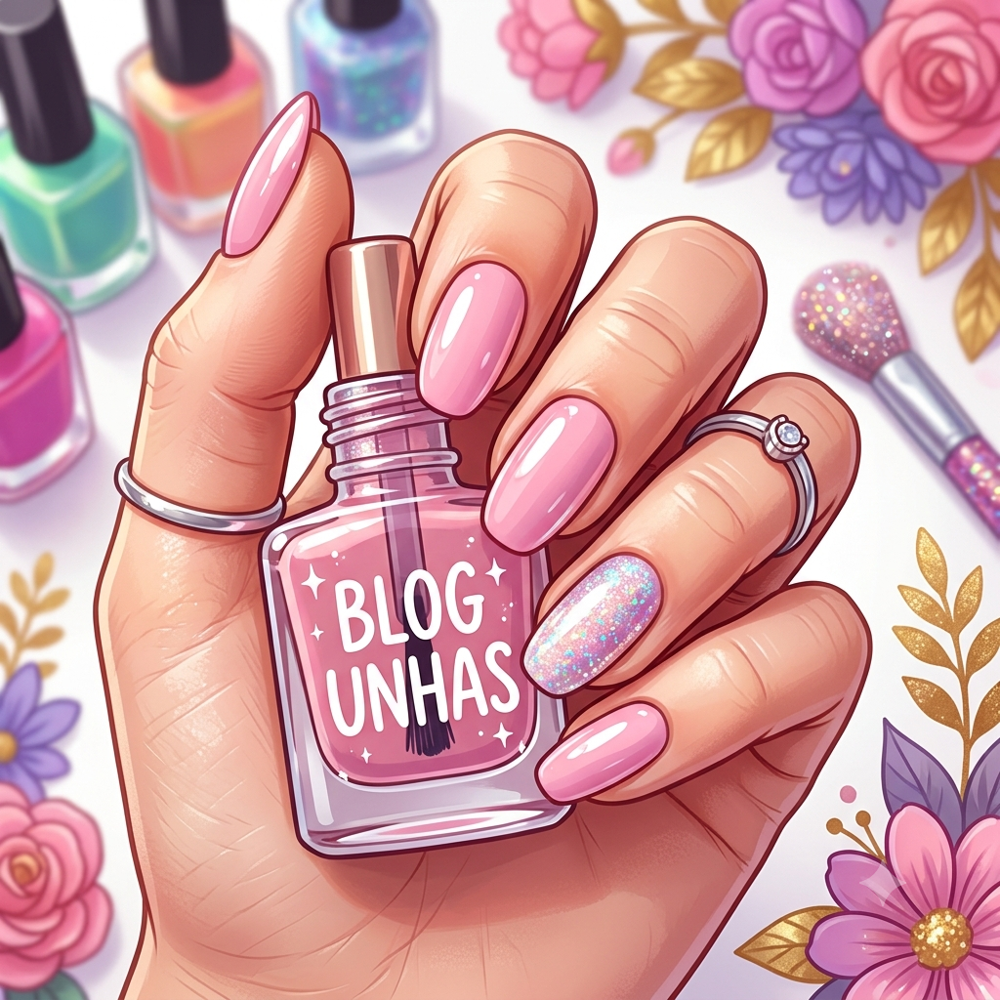

Meu Primeiro Post
Boas-vindas ao meu blog! Aqui vou compartilhar dicas de cuidados, tendências e técnicas para manter suas unhas impecáveis.
Compartilhando meus conhecimentos sobre unhas

Boas-vindas ao meu blog! Aqui vou compartilhar dicas de cuidados, tendências e técnicas para manter suas unhas impecáveis.
Manter as cutículas hidratadas é o segredo para uma esmaltação duradoura. Confira os óleos essenciais que recomendo!
Descubra as paletas de cores que vão bombar nesta temporada e aprenda a combinar tons pastel com glitter.